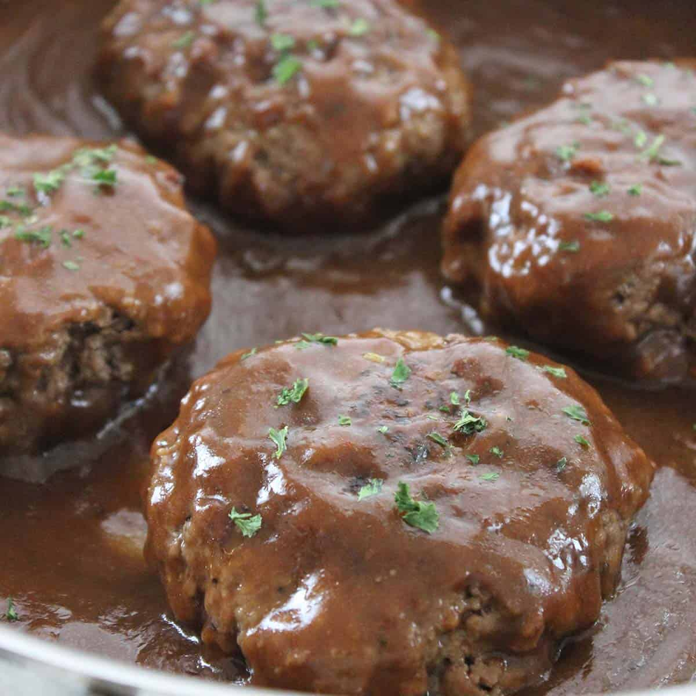

Salisbury Steak

Ingredients
For Patties
- 1 lb of ground beef
- 1/3 cup of Bread Crumbs
- 2 tsp Ketchup
- 1 tsp Mustard
- 1 tsp Worcestershire
- 1/2 tsp Garlic Powder
- 1/2 tsp Onion Powder
- Salt and Pepper to Taste
For Gravy
- 2 packets Brown Gravy Mix
- 2 cup hot Water
- 1 tsp Ketchup
- 1/2 cup Worcestershire
Steps
- Combine patty ingredients into a large bowl and mix until they are mixed together
- Heat 1 tablespoon of olive oil in a large skillet on medium heat.
- Cook patties on both sides until no longer pink
- Move temperature to low
- Whisk gravy mix and water together until well blended
- Whisk in ketchup and Worcestershire and pour over patties in skillet
- Allow the sauce to thicken and warm over a simmer